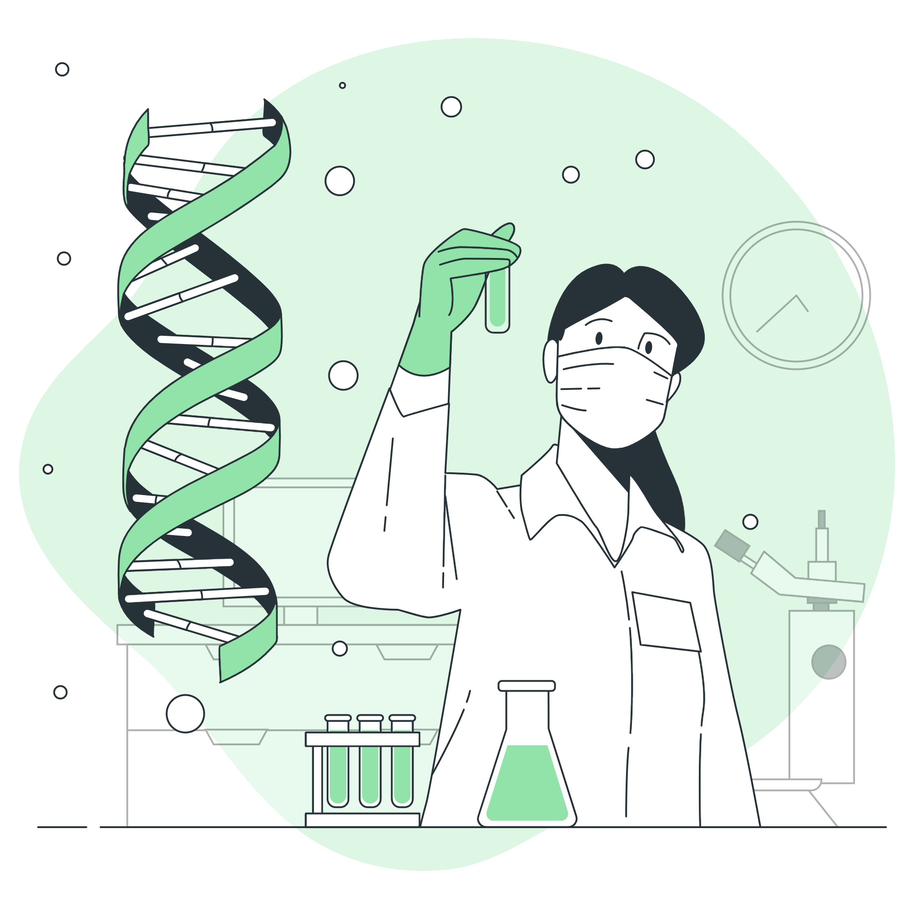

A Biotecnologia é o conjunto de procedimentos que envolvem a manipulação de organismos vivos a fim de fabricar ou modificar produtos. Desde muito tempo, a biotecnologia já era utilizada na fabricação de pães e cervejas a partir de microrganismos vivos. Ao longo do tempo, fomos transformando a biotecnologia, incorporando novas ferramentas e aplicações. O avanço nos conhecimentos sobre genética, medicina, alimentação, agricultura, meio ambiente e entre outras, são decisivos para desenvolvermos o que chamamos hoje de biotecnologia moderna.
A Engenharia Genética é um ramo da Biotecnologia que utiliza técnicas de recombinação e manipulação de genes, reformulando, reconstituindo, reproduzindo e até criando seres vivos...
Saiba MaisOs Avanços na Engenharia Genética são muitos, desde há muito tempo atrás até os dias de hoje...
Saiba MaisA Clonagem na Engenharia Genética é um processo artificial pautado na reprodução de cópias genéticas de determinados seres vivos...
Saiba Mais